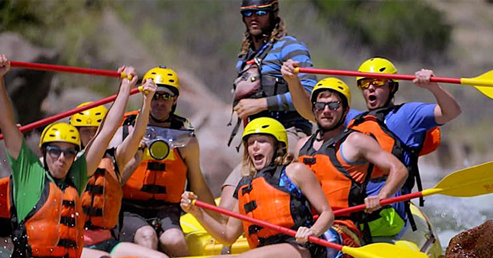
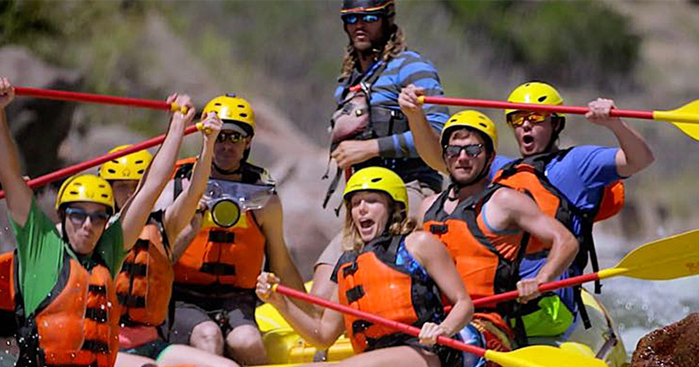
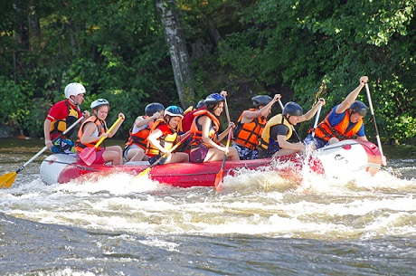
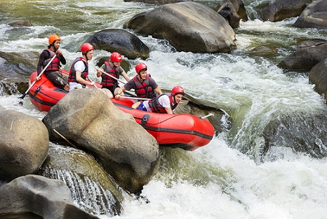
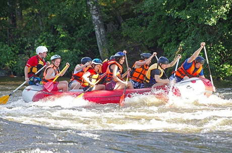
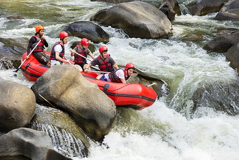

White Water Rafting
Our Company's Purpose, Mission, Creed and Motto. A p element with a brief history of the company.

Our Company's Purpose, Mission, Creed and Motto. A p element with a brief history of the company.
A p element with a brief history of the company. It is OK to use nonsense language. All images used on your site must be optimized which means not pixelated and 100 kB in size. In VS Code, be sure you have your wdd130 directory open and add a sub-folder named "wwr" (wwr stands for white water rafting). This folder will contain the rafting website project and you will add pages and assets to this folder for the rafting project throughout the course.
 

 


